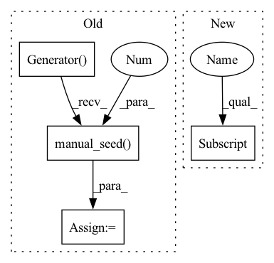

Pattern ID :19903

Before Change
output = alt_pipe([prompt], generator=generator, guidance_scale=6.0, num_inference_steps=2, output_type="np")
image = output.images
generator = torch.Generator(device=device).manual_seed(0)
image_from_tuple = alt_pipe(
[prompt],
generator=generator,
guidance_scale=6.0,
After Change
)
// TODO: remove after fixing the non-deterministic text encoder
text_encoder = RobertaSeriesModelWithTransformation(text_encoder_config)
components["text_encoder"] = text_encoder
alt_pipe = AltDiffusionPipeline(**components)
alt_pipe = alt_pipe.to(device)
In pattern: SUPERPATTERN
Frequency: 3
Non-data size: 4
Instances
Fragment ID: 64665849
Project Name: huggingface/diffusers
Commit Name: 02d83c9ff1b93f2c6f9c94f9369b3e4bc1ba8ce7
Time: 2022-12-06
Author: anton@huggingface.co
File Name: tests/pipelines/altdiffusion/test_alt_diffusion.py
M Class Name: AltDiffusionPipelineFastTests
N Class Name: AltDiffusionPipelineFastTests
M Method Name: test_alt_diffusion_ddim(1)
N Method Name: test_alt_diffusion_ddim(1)
M Parent Class: unittest.TestCase,PipelineTesterMixin
N Parent Class: unittest.TestCase,PipelineTesterMixin
M File Name: tests/pipelines/altdiffusion/test_alt_diffusion.py
N File Name: tests/pipelines/altdiffusion/test_alt_diffusion.py
M Start Line: 128
M End Line: 180
N Start Line: 126
N End Line: 149
'>
Before Change
prompt = "An astronaut riding an elephant"
init_image = self.dummy_image.to(torch_device)
generator = torch.Generator(device=torch_device).manual_seed(0)
output = sd_pipe(
prompt=prompt,
source_prompt=source_prompt,
generator=generator,
After Change
@unittest.skipIf(torch_device != "cuda", "This test requires a GPU")
def test_stable_diffusion_cycle_fp16(self):
components = self.get_dummy_components()
for name, module in components.items():
if hasattr(module, "half"):
components[name] = module.half()
pipe = CycleDiffusionPipeline(**components)
pipe = pipe.to(torch_device)
pipe.set_progress_bar_config(disable=None)
'>
Fragment ID: 64665847
Project Name: huggingface/diffusers
Commit Name: 02d83c9ff1b93f2c6f9c94f9369b3e4bc1ba8ce7
Time: 2022-12-06
Author: anton@huggingface.co
File Name: tests/pipelines/stable_diffusion/test_cycle_diffusion.py
M Class Name: CycleDiffusionPipelineFastTests
N Class Name: CycleDiffusionPipelineFastTests
M Method Name: test_stable_diffusion_cycle_fp16(1)
N Method Name: test_stable_diffusion_cycle_fp16(1)
M Parent Class: unittest.TestCase,PipelineTesterMixin
N Parent Class: unittest.TestCase,PipelineTesterMixin
M File Name: tests/pipelines/stable_diffusion/test_cycle_diffusion.py
N File Name: tests/pipelines/stable_diffusion/test_cycle_diffusion.py
M Start Line: 207
M End Line: 253
N Start Line: 133
N End Line: 142
'>
Before Change
image = output.images
generator = torch.Generator(device=device).manual_seed(0)
image_from_tuple = alt_pipe(
[prompt],
generator=generator,
guidance_scale=6.0,
After Change
def test_alt_diffusion_pndm(self):
device = "cpu" // ensure determinism for the device-dependent torch.Generator
components = self.get_dummy_components()
components["scheduler"] = PNDMScheduler(skip_prk_steps=True)
torch.manual_seed(0)
text_encoder_config = RobertaSeriesConfig(
hidden_size=32,
'>
Fragment ID: 64665844
Project Name: huggingface/diffusers
Commit Name: 02d83c9ff1b93f2c6f9c94f9369b3e4bc1ba8ce7
Time: 2022-12-06
Author: anton@huggingface.co
File Name: tests/pipelines/altdiffusion/test_alt_diffusion.py
M Class Name: AltDiffusionPipelineFastTests
N Class Name: AltDiffusionPipelineFastTests
M Method Name: test_alt_diffusion_pndm(1)
N Method Name: test_alt_diffusion_pndm(1)
M Parent Class: unittest.TestCase,PipelineTesterMixin
N Parent Class: unittest.TestCase,PipelineTesterMixin
M File Name: tests/pipelines/altdiffusion/test_alt_diffusion.py
N File Name: tests/pipelines/altdiffusion/test_alt_diffusion.py
M Start Line: 184
M End Line: 228
N Start Line: 161
N End Line: 183